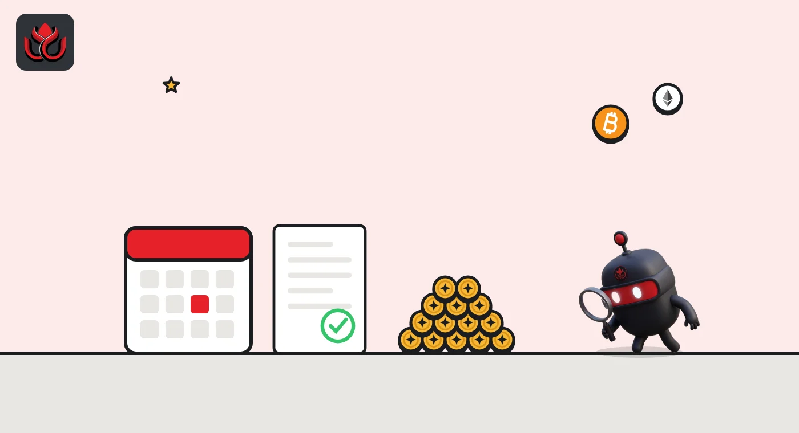

Trump Media moved 4,259 BTC to Crypto.com from its collateral wallets. A move is not a sale
Two transfers worth about $344 million left wallets that Arkham labels as collateral for Trump Media's $1 billion convertible notes, weeks before holders can ask for their money back.
Key points
- About 4,259 BTC, worth roughly $344 million at the time, moved to a Crypto.com-linked address at about 02:17 UTC on November 5, 2026, in two transfers, according to Arkham data cited by FinanceFeeds.
- Both came from wallets Arkham labels "2028 Convertible Notes Collateral." Trump Media's filings say holders of those $1 billion notes can ask the company to buy them back on November 30, 2026.
- Trump Media called two earlier moves to Crypto.com this year custody or trading management, not sales. It has not commented on this one yet.
What moved
At about 02:17 UTC on November 5, 2026 (9:17 p.m. ET on November 4), two bitcoin transfers left wallets linked to Trump Media & Technology Group: 2,140.03 BTC and 2,119.31 BTC. Both went to an address linked to Crypto.com, according to Arkham data reported by FinanceFeeds.
Together that is about 4,259 BTC. At the bitcoin price on CoinGecko at that hour, about $80,680, the coins were worth roughly $344 million.
Why these wallets matter
Arkham labels both sending wallets "2028 Convertible Notes Collateral." That points to the bitcoin Trump Media pledged behind the $1 billion of zero-coupon convertible notes it sold in May 2025, which mature on May 29, 2028. The company's second-quarter filing listed 4,260.73 BTC pledged as collateral at June 30, within 2 BTC of the amount that just moved, FinanceFeeds notes.
The date to watch is November 30, 2026. Under the notes' terms, as described in the company's filings, holders can require Trump Media to buy back their notes for cash at full principal that day. If every holder did, that would mean about $1 billion. The filings list ways to pay, including cash, refinancing, new borrowing, issuing shares or selling assets, and say the company may need to sell bitcoin if other funding falls short.

It has happened before
This is the third large move to Crypto.com this year. About 2,650 BTC went there in May 2026 and about 2,628 BTC in early August 2026. Both times, Trump Media said the coins were not sold and described the moves as part of its trading strategy or custody management. Crypto.com is one of its custody partners.
On-chain data shows where coins go, not why. The transfer alone does not tell us whether the bitcoin was released from the collateral, moved to a new custodian for the notes, or prepared for sale.
LC Insight analysis
This section is our reading of the facts above, not a statement of fact.
- For beginners: moving coins to an exchange-linked address is not the same as selling them. Big holders often move bitcoin to custodians or trading desks for reasons that never touch the market.
- The signal that would matter is the next hop. If these coins split up and flow into exchange order books, that would look like selling. If they sit still in the receiving address, it looks like custody.
- The November 30 put date is why this move gets attention. Watch for a company statement or a filing before then.
What's next
- Whether the 4,259 BTC moves again from the Crypto.com-linked address
- Any Trump Media statement or SEC filing about the transfer
- How many noteholders use the November 30, 2026 put
Disclaimer. This article is based on public information and the sources listed below as of the update time shown. It is for information only and is not investment, legal or tax advice. Figures may change as companies and authorities publish new data.